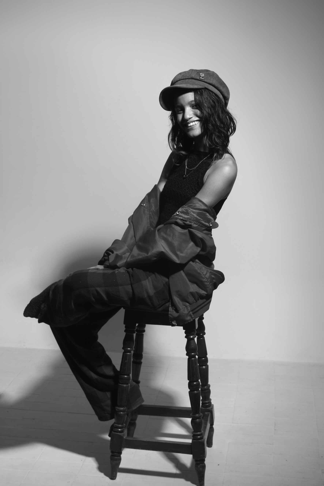

Juliana Mendoza
Artista plástico
Nacida en Colombia, Barranquilla, Atlántico
He participado en exposiciones colectivas en espacios relacionados a la Universidad del Atlántico y por supuesto, en Bellas Artes. También he realizado exposiciones en el colegio Karl Parrish Distrital relacionados a la Semana de la Creatividad (2024).
Registro de Trabajo y Proceso